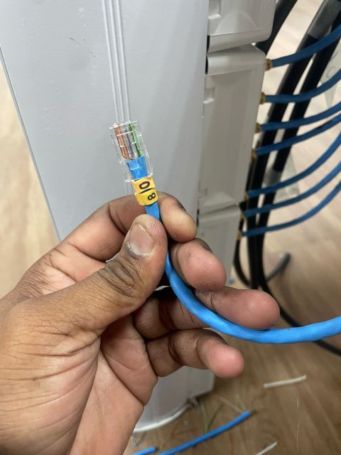
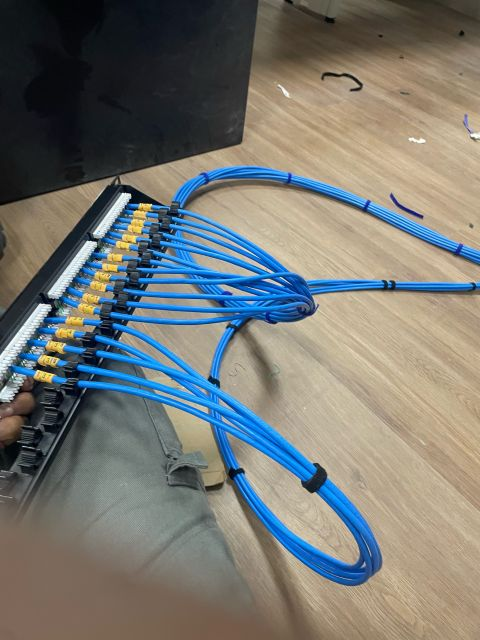
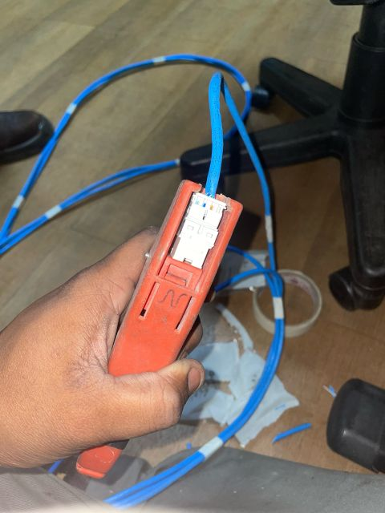
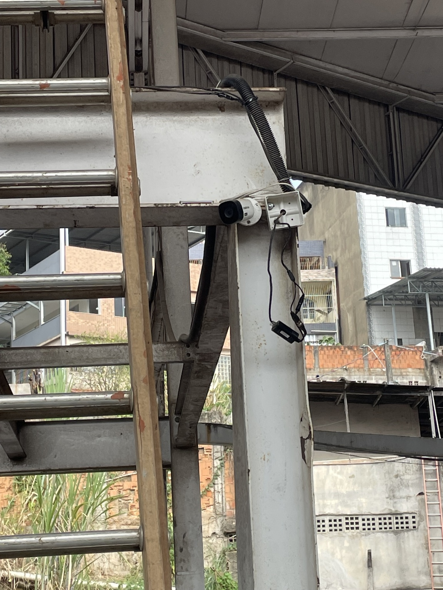
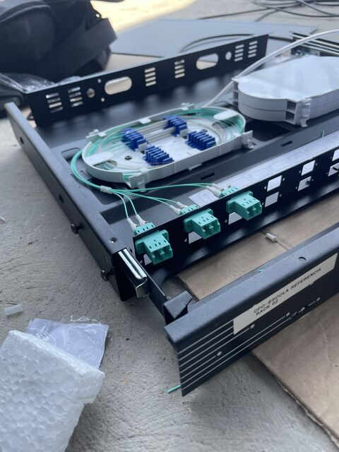

Novos pontos
Ampliação de salas, estações, equipamentos ou áreas que precisam de conectividade.
INFRAESTRUTURA DE REDES · GRANDE VITÓRIA · BRASIL E ONLINE
Executamos e organizamos a infraestrutura física de redes com foco em cabeamento, racks, patch panels, CFTV IP, fibra óptica e documentação. Também atendemos empresas de TI como apoio de campo.
Sem valor mínimo. A condição, quando aplicável, é confirmada na proposta.
QUANDO A RD NETWORKS PODE AJUDAR
Atendemos necessidades pontuais e projetos definidos por escopo, sem obrigar você a contratar mensalidade.
Ampliação de salas, estações, equipamentos ou áreas que precisam de conectividade.
Organização física, patch panels, identificação e adequação para facilitar a manutenção.
Infraestrutura física para câmeras IP, com lançamento e organização dos cabos.
Mapeamento de pontos, portas e conexões para sua equipe entender a infraestrutura.
SERVIÇOS
Serviços de infraestrutura física e documentação técnica. O escopo final é definido antes da execução.

01Lançamento, organização e terminação de cabos e pontos de rede.
Ver serviço →
02Fixação, organização, adequação, conectorização e identificação.
Ver serviço →
03Conectores, keystones e acabamento dos pontos de rede.

04Infraestrutura física, cabos de dados e fixação de câmeras.
Ver serviço →
05Lançamento de fibra conforme percurso, condições e análise técnica.
Mapeamento de pontos, portas, equipamentos e conexões.
Ver serviço →Pequenas adequações relacionadas à infraestrutura de TI, como tomadas e pontos para equipamentos, conforme avaliação.
Ver serviço →PROCESSO
Você sabe o que será feito antes de aprovar o serviço.
Envie o serviço, cidade, quantidade aproximada e, se tiver, fotos do local.
Avaliamos as informações e identificamos o que precisa ser considerado na proposta.
Serviço, prazo, mão de obra, materiais e deslocamento são apresentados de forma clara.
Realizamos somente o escopo aprovado e combinamos a entrega com você.
PORTFÓLIO
Alguns registros reais de atividades técnicas. Não usamos depoimentos ou resultados de clientes que não possam ser comprovados.
PLANOS MENSAIS
Planos de mão de obra e atendimento presencial. Materiais, equipamentos e serviços de maior porte são orçados separadamente.
APOIO DE CAMPO · B2B
Atuação pontual para empresas de TI, integradores, provedores e equipes técnicas que precisam de parceiro para executar infraestrutura física.
RD NETWORKS GLOBAL · ONLINE
Serviços remotos desenvolvidos a partir de fotos, plantas, medidas, equipamentos e informações fornecidas pelo cliente.
Mapeamento de pontos, portas, equipamentos e conexões.
Planejamento visual do rack, posicionamento e organização dos equipamentos.
Documentação + planejamento de rack em uma entrega consolidada.
ÁREA DE ATENDIMENTO
Atendimento presencial em Vitória, Vila Velha, Serra e Cariacica. Guarapari e outras cidades são avaliadas conforme escopo e deslocamento.
Para outras regiões do Brasil, o atendimento presencial depende do projeto. Serviços de documentação e planejamento podem ser realizados online.
SOBRE A RD NETWORKS
A RD Networks atua com infraestrutura de redes, organização física, documentação e apoio de campo. A equipe é enxuta, o que permite comunicação direta e definição clara do escopo antes da execução.
Atendimento presencial atual: noites durante a semana e finais de semana, mediante agendamento. Serviços online seguem o horário combinado.
CNPJ 69.318.238/0001-66 · RD Networks · Infraestrutura que conecta.
FAQ
Sim. Não é necessário contratar plano mensal para um serviço pontual.
Não por padrão. A proposta informa como serão tratados materiais, equipamentos e insumos.
Vitória, Vila Velha, Serra e Cariacica. Guarapari e outras cidades são avaliadas previamente.
Sim. A RD Networks pode atuar como apoio de campo para execução de infraestrutura física, conforme disponibilidade.
Cada plano define visitas e horas presenciais por mês. Horas não utilizadas não acumulam e serviços fora do escopo são orçados separadamente.
Não. A disponibilidade atual é mediante agendamento, principalmente à noite durante a semana e aos finais de semana.
ORÇAMENTO
Envie os dados básicos. Depois analisamos o escopo e retornamos com a proposta adequada.
Se tiver fotos, plantas ou imagens do rack, você poderá enviá-las pelo WhatsApp.